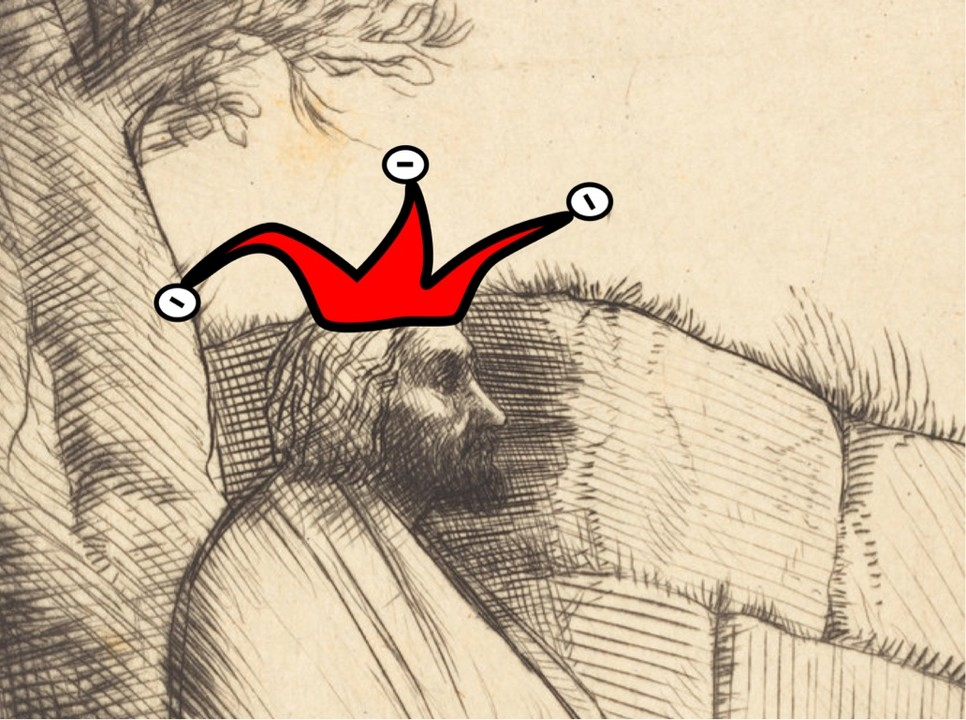
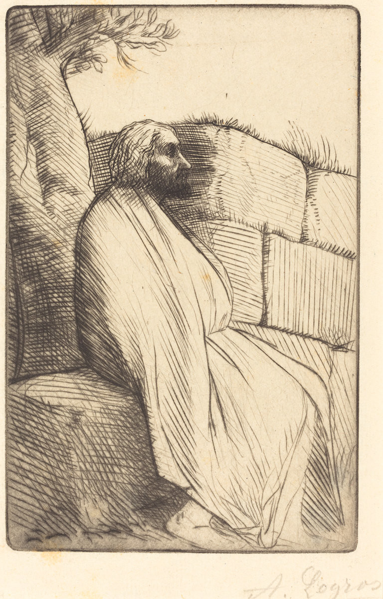
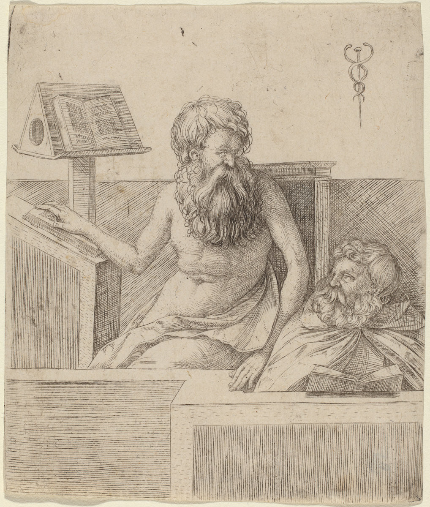
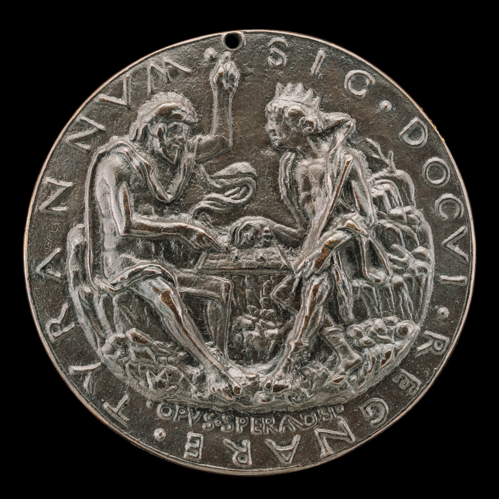

The Jester and the Philosopher's Guild
September 5, 2017

My lord: I am so bored Jester! Arrange feeding our court philosopher to the lions
Jester: Oh but I am so fond of Master Soufflé!
My lord: Master Soufflé is greedier than even you Jester, he 'wishes', his wages raised...
Jester: Oh but we need him M'lord
My lord: That may be true Jester. He does seem to be wise in ways that I am not. He seems to know his words in subjects that need serious study. Subjects for which, I, sadly, have but little time
Jester: No, nay, not M'lord! We have no use for his wisdom or serious subjects
My lord: What then?
Jester: No one knows M'lord, I wager half my thin gold he's good for nothing
My lord: Jester you test my patience. Be warned. My bowel movement was not the happiest this morning
Jester: Oh but M'lord, we require someone with idle hands, if we are ever to stumble upon a philosopher's stone, find some holy grail, or shine light on the path to eternal happiness

Le Philosophe (1837–1911), Alphonse Legros
My lord: That will take ages if not more than that! What use is he now! A lion's hunger will be stilled at least
Jester: Now? Now he's solely entertaining M'lord. Yet another Jester if you please, and we always do require more of these...
My lord: The lions could suffer the two of you. What wisdom carry you Jester? What time do you save me in study!
Jester: But M'lord! Our dear Master Soufflé and his guild of philosophers... they ever only speak in riddles, riddles they swear only men of the craft truly understand. I was a philosopher once M'lord indeed. I learned the guild's philosophy, I studied all the tomes. There was the void to be found M'lord! Conclusions? Nothing but pretty poetry. Our dear Soufflé is wise that is true, too wise to tell this to you! Too slippery to forego new apprentices who are not inclined to analytic poetry. And those who finally find out M'lord, awaits honour, a medal, and admittance to mastery. Master philosophers are certainly wise M'lord, and not only that, they are mighty old! Too old to tell to you all this, M'lord...

Two Philosophers (1509)
My lord: Prove it!
Jester: Give them a task M'lord. Demand they provide something serviceable to our kingdom, to our people, or just to you your majesty, before the following Sunday. A weapon, a system of trade, an apparatus for new thought, a novel art of war, or a serious answer to a grave question unresolved...
My lord: A week's time Jester? Your foolishness on parade. What sober philosophy can so briskly be made?
Jester: How long then M'lord?
My lord: Who knows! Some answers may never be found Jester, some questions never settled.
Jester: And which ones are these M'lord?

King Evilmerdoch Playing Chess (1485)
My lord: Oh now Jester. That's what we keep the master for
Jester: Let me quickly summon him M'lord. I so missed his dear presence
My lord: May Master Soufflé another year be granted. He entertains me Jester.
References
Le Philosophe (1837–1911): National Gallery of Art
Two Philosophers (1509): National Gallery of Art
King Evilmerdoch Playing Chess (1485): National Gallery of Art